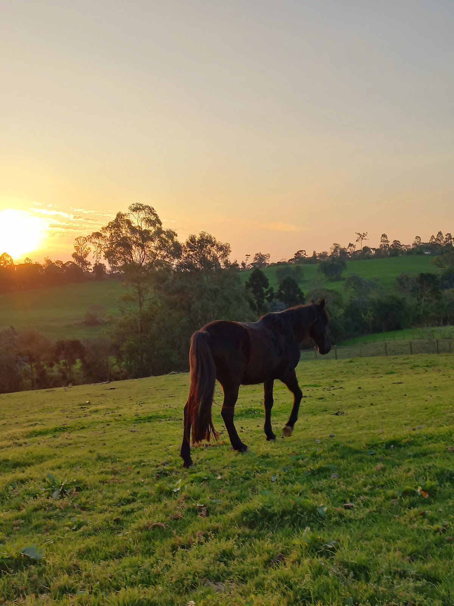
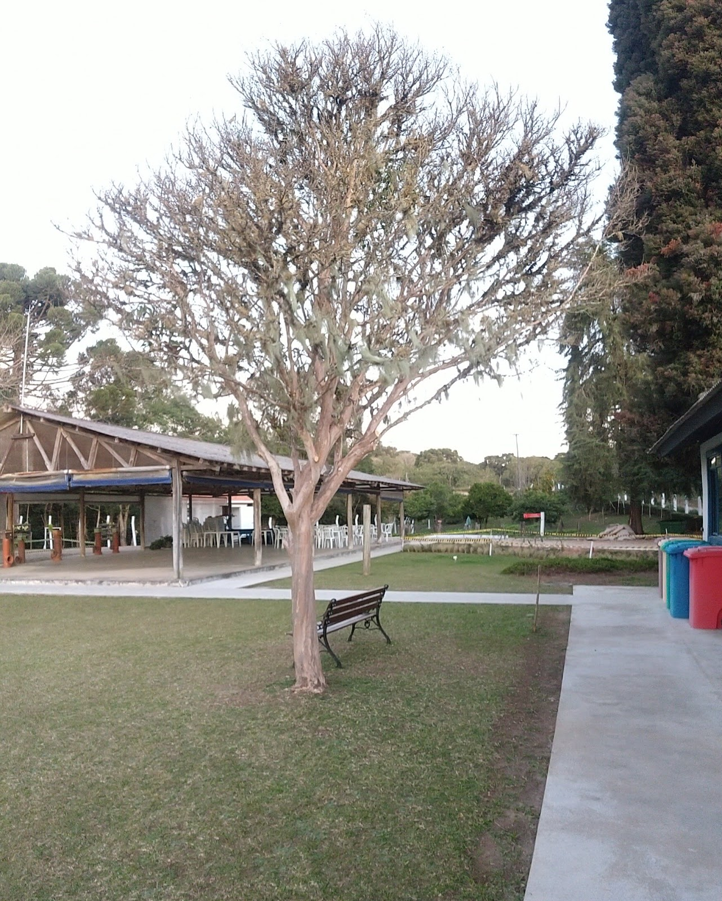

Haras Buena Vista
Capoeira dos Dinos - R. Nova Tirol, nº 1.188 - Vila Fuck, Piraquara - PR, 83306-230 +55 41 99959-6900
Aldeia Indígena Araçai

A área da Aldeia Araçaí fica localizada em uma reserva de proteção ambiental, o que impede que os índios possam plantar alimentos. A renda familiar vem da comercialização de artesanatos - feitos de penas de aves, palhas e madeira - , que são oferecidos para os visitantes na própria aldeia. É localizada na Vila Fuck , Piraquara - PR.
Casa da Cultura da Água - SANEPAR
Endereço Via Google Maps Piraquara - PR. Telefone: +55 41 99967-8889